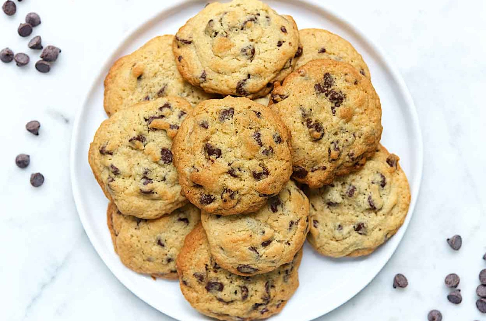

Home
Odin Recipes

Description
Cookies recipe description
Ingredients
- 8 tablespoons (113g) unsalted butter, room temperature
- 1/3 cup plus 1 tablespoon (85g) granulated sugar
- 1/3 cup (71g) light brown sugar or dark brown sugar, packed
- 1/2 teaspoon table salt
- 1 teaspoon King Arthur Pure Vanilla Extract
- 1/4 teaspoon baking soda
- 1/2 teaspoon baking powder
- 1 large egg
- 1 1/2 cups (180g) King Arthur Unbleached All-Purpose Flour
- 2 tablespoons (28g) milk, optional for cakier cookies
- 2 cups (227g to 340g) chips, nuts, and/or dried fruit, optional
Steps
- Preheat the oven to 375°F. Lightly grease two baking sheets, or line with parchment.
- Beat together the butter, sugars, vanilla, salt, baking powder, and baking soda till well combined and lightened in color.
- Add the egg, beating till smooth. Scrape the sides of the bowl, and beat again till smooth.
- Add the flour, mixing it in completely.
- If you're making cookies using chips, nuts, etc, beat in the milk, then the add-ins. If you're making plain cookies, without add-ins, omit the milk.
- Drop the cookies by the generous tablespoon onto the prepared baking sheets, spacing them about 2" apart. A tablespoon cookie scoop works well here.
- Bake the cookies for 10 to 14 minutes (or up to 16 minutes; ovens may vary). The cookies should be a light golden brown, and a bit darker around the edges. For softer cookies, bake the shorter amount of time; for crunchy cookies, bake longer.
- Remove the cookies from the oven, and cool right on the baking sheets.
- Store these chocolate chip cookies airtight at room temperature for several days. Freeze for longer storage.